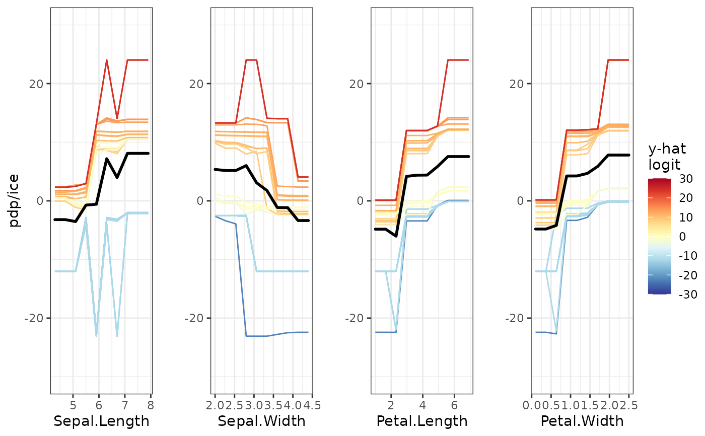

pdpVars.RdDisplays the individual conditional expectation (ICE) curves and aggregated partial dependence for each variable in a grid.
pdpVars(
data,
fit,
response,
vars = NULL,
pal = rev(RColorBrewer::brewer.pal(11, "RdYlBu")),
gridSize = 10,
nmax = 500,
class = 1,
nIce = 30,
predictFun = NULL,
limits = NULL,
colorVar = NULL,
draw = TRUE,
probability = FALSE
)Data frame used for fit.
A supervised machine learning model, which understands condvis2::CVpredict
The name of the response for the fit.
The variables to plot (and their order), defaults to all variables other than response.
A vector of colors to show predictions, for use with scale_fill_gradientn
The size of the grid for evaluating the predictions.
Uses sample of nmax data rows for the pdp. Default is 500. Use all rows if NULL.
Category for classification, a factor level, or a number indicating which factor level.
Number of ice curves to be plotted, defaults to 30.
Function of (fit, data) to extract numeric predictions from fit. Uses condvis2::CVpredict by default, which works for many fit classes.
A vector determining the limits of the predicted values.
Which variable to colour the predictions by.
If FALSE, then the plot will not be drawn. Default is TRUE.
if TRUE, then returns the partial dependence for classification on the probability scale. If FALSE (default), then the partial dependence is returned on a near logit scale.
A grid displaying ICE curves and univariate partial dependence.
# \donttest{
# Load in the data:
aq <- na.omit(airquality)
fit <- lm(Ozone ~ ., data = aq)
pdpVars(aq, fit, "Ozone")
# Classification
library(ranger)
rfClassif <- ranger(Species ~ ., data = iris, probability = TRUE)
pdpVars(iris, rfClassif, "Species", class = 3)

pp <- pdpVars(iris, rfClassif, "Species", class = 2, draw = FALSE)
pp[[1]]
pdpVars(iris, rfClassif, "Species", class = 2, colorVar = "Species")
# }